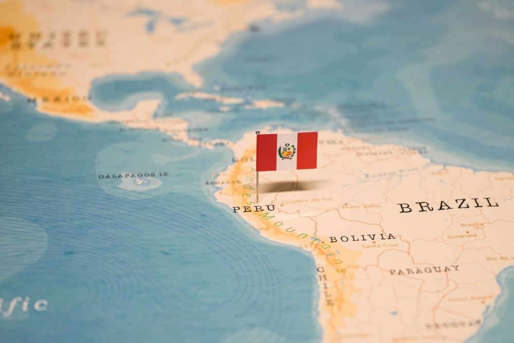
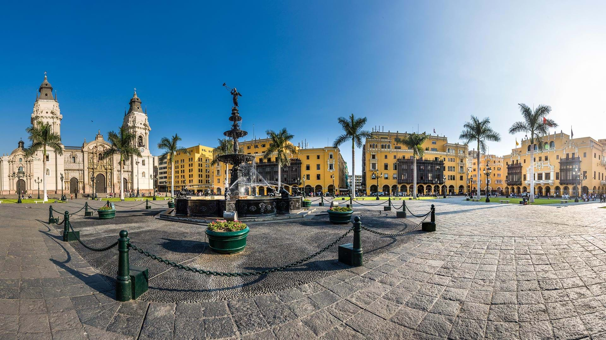

Il Perù in breve
| Il Perù è una terra tutta da scoprire con vedute mozzafiato, una cultura e delle tradizioni che fanno tornare nel passato che è formato anche dalle tribù presenti nel territorio come gli Inca |  |
 |
Forma di governo: Repubblica Capitale: Lima Moneta: Sol Lingua ufficiale: spagnolo Religione: cattolica (90%) |
 |
|